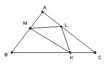

Take any points K, L, M on the sides BC, CA, AB of the triangle ABC. Prove that at least one of the triangles AML, BKM, CLK has area ≤ 1/4 area ABC.
Solution

If not, then considering ALM we have 4·AL·AM·sin A > AB·AC·sin A, so 4·AL·AM > AB·AC = (AM + BM)(AL + CL), so 3·AL·AM > AM·CL + BM·AL + BM·CL. Set k = BK/CK, l = CL/AL, m = AM/BM, and this inequality becomes:
3 > l + 1/m + l/m.
Similarly, considering the other two triangles we get: 3 > k + 1/l + k/l, and 3 > m + 1/k + m/k.
Adding gives: 9 > k + l + m + 1/k + 1/l + 1/m + k/l + l/m + m/k, which is false by the arithmetic/geometric mean inequality.

Solutions are also available in: Samuel L Greitzer, International Mathematical Olympiads 1959-1977, MAA 1978, and in István Reiman, International Mathematical Olympiad 1959-1999, ISBN 189-8855-48-X.
© John Scholes
jscholes@kalva.demon.co.uk
29 Sep 1998
Last corrected/updated 26 Sep 2003